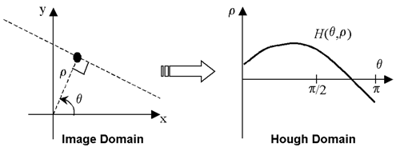
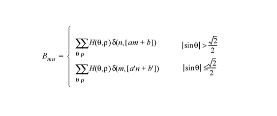
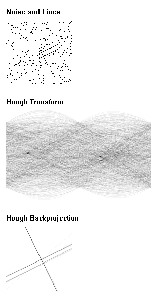

The HOUGH function implements the Hough transform, used to detect straight lines within a two-dimensional image. This function can be used to return either the Hough transform, which transforms each nonzero point in an image to a sinusoid in the Hough domain, or the Hough backprojection, where each point in the Hough domain is transformed to a straight line in the image.
The Hough transform is defined for a function A ( x , y ) as:
where δ is the Dirac delta-function. With A ( x , y ), each point ( x , y ) in the original image, A , is transformed into a sinusoid ρ = x cosθ – y sinθ, where ρ is the perpendicular distance from the origin of a line at an angle θ (The angle θ will be limited to 0 <= θ < π which could result in negative ρ values.):
|
 |
Points that lie on the same line in the image will produce sinusoids that all cross at a single point in the Hough transform. For the inverse transform, or backprojection, each point in the Hough domain is transformed into a straight line in the image.
Usually, the Hough function is used with binary images, in which case H (θ, ρ) gives the total number of sinusoids that cross at point (θ, ρ), and hence, the total number of points making up the line in the original image. By choosing a threshold T for H (θ, ρ), and using the inverse Hough function, you can filter the original image to keep only lines that contain at least T points.
Consider an image A mn of dimensions M by N , with array indices m = 0,..., M –1 and n = 0,..., N –1.
The discrete formula for the HOUGH function for A mn is:
where the brackets [ ] indicate rounding to the nearest integer, and
The pixels are assumed to have spacing Δ x and Δ y in the x and y directions. The delta-function is defined as:
The backprojection, B mn , contains all of the straight lines given by the (θ, ρ) points given in H (θ, ρ). The discrete formula is

where the slopes and offsets are given by:
Hough Transform:
Result = HOUGH( Array [, / DOUBLE ] [, DRHO = scalar ] [, DX = scalar ] [, DY = scalar ] [, / GRAY ] [, NRHO = scalar ] [, NTHETA = scalar ] [, RHO = variable ] [, RMIN = scalar ] [, THETA = variable ] [, XMIN = scalar ] [, YMIN = scalar ] )
Hough Backprojection:
Result = HOUGH( Array , / BACKPROJECT , RHO = variable , THETA = variable [, / DOUBLE ] [, DX = scalar ] [, DY = scalar ] [, NX = scalar ] [, NY = scalar ] [, XMIN = scalar ] [, YMIN = scalar ] )
The result of this function is a two-dimensional floating-point array, or a complex array if the input image is complex. If Array is double-precision, or if the DOUBLE keyword is set, the result is double-precision, otherwise, the result is single-precision.
The two-dimensional array of size M by N which will be transformed. If the keyword GRAY is not set, then, for the forward transform, Array is treated as a binary image with all nonzero pixels considered as 1.
If set, the backprojection is computed, otherwise, the forward transform is computed. When BACKPROJECT is set, Result will be an array of dimension NX by NY .
Note: The Hough transform is not one-to-one: each point ( x , y ) is not mapped to a single (θ, ρ). Therefore, instead of the original image, the backprojection, or inverse transform, returns an image containing the set of all lines given by the (θ, ρ) points.
Set this keyword to force the computation to be done using double-precision arithmetic.
Set this keyword equal to a scalar specifying the spacing Δρ between ρ coordinates, expressed in the same units as Array . The default is [(DX 2 + DY 2 )/2] 1/2 , which is 1/SQRT(2) times the diagonal distance between pixels. A larger value produces a coarser resolution by mapping multiple pixels onto a single ρ; this is useful for images that do not contain perfectly straight lines. A smaller value may produce undersampling by trying to map fractional pixels onto ρ, and is not recommended. If BACKPROJECT is specified, this keyword is ignored.
Set this keyword equal to a scalar specifying the spacing between the horizontal (X) coordinates. The default is 1.0.
Set this keyword equal to a scalar specifying the spacing between the vertical (Y) coordinates. The default is 1.0.
Set this keyword to perform a weighted Hough transform, with the weighting given by the pixel values. If GRAY is not set, the image is treated as a binary image with all nonzero pixels considered as 1. If BACKPROJECT is specified, this keyword is ignored.
Set this keyword equal to a scalar specifying the number of ρ coordinates to use. The default is 2 CEIL([MAX(X 2 + Y 2 )] 1/2 / DRHO) + 1. If BACKPROJECT is specified, this keyword is ignored.
Set this keyword equal to a scalar specifying the number of θ coordinates to use over the interval [0,π]. The default is CEIL(π [MAX(X 2 + Y 2 )] 1/2 / DRHO). A larger value will produce smoother results, and is useful for filtering before backprojection. A smaller value will result in broken lines in the transform, and is not recommended. If BACKPROJECT is specified, this keyword is ignored.
If BACKPROJECT is specified, set this keyword equal to a scalar specifying the number of horizontal coordinates in the output array. The default is FLOOR(2 MAX(|RHO|)(DX 2 + DY 2 ) –1/2 + 1). For the forward transform this keyword is ignored.
If BACKPROJECT is specified, set this keyword equal to a scalar specifying the number of vertical coordinates in the output array. The default is FLOOR(2 MAX(|RHO|)(DX 2 + DY 2 ) –1/2 + 1). For the forward transform, this keyword is ignored.
For the forward transform, set this keyword to a named variable that, on exit, will contain the radial (ρ) coordinates, in units defined by the DX and DY keywords (pixels by default). If BACKPROJECT is specified, this keyword must contain the ρ coordinates of the input Array .
Set this keyword equal to a scalar specifying the minimum ρ coordinate to use for the forward transform. The default is –0.5(NRHO – 1) DRHO. If BACKPROJECT is specified, this keyword is ignored.
For the forward transform, set this keyword to a named variable containing a vector of angular (θ) coordinates (in radians) to use for the transform. If NTHETA is specified instead, and THETA is set to a named variable, then on exit THETA will contain the θ coordinates. If BACKPROJECT is specified, this keyword must contain the θ coordinates of the input Array . HOUGH returns θ in [0,π].
Set this keyword equal to a scalar specifying the X coordinate of the lower-left corner of the input Array . The default is –( M– 1)/2, where Array is an M by N array. If BACKPROJECT is specified, set this keyword equal to a scalar specifying the X coordinate of the lower-left corner of the Result . In this case the default is –DX (NX–1)/2.
Set this keyword equal to a scalar specifying the Y coordinate of the lower-left corner of the input
Array
. The default is –(
N–
1)/2, where
Array
is an
M
by
N
array. If BACKPROJECT is specified, set this keyword equal to a scalar specifying the Y coordinate of the lower-left corner of the
Result
. In this case the default is
–DY (NY–1)/2.
The example ex_hough_doc.pro computes the Hough transform of a random set of pixels. This example file is installed in the IDL installation’s /examples/doc directory. To view the example code, enter .edit ex_hough_doc.pro at the IDL command line. To execute the code, enter ex_hough_doc at the IDL command line.
The following figure displays the output of this example. The top image shows three lines drawn within a random array of pixels that represent noise. The center image shows the Hough transform, displaying sinusoids for points that lie on the same line in the original image. The bottom image shows the Hough backprojection, after setting the threshold to retain only those lines that contain more than 20 points. The Hough inverse transform, or backprojection, transforms each point in the Hough domain into a straight line in the image.
|
 |
| 1. | Gonzalez, R.C., and R.E. Woods. Digital Image Processing . Reading, MA: Addison Wesley, 1992. |
| 2. | Jain, Anil K. Fundamentals of Digital Image Processing . Englewood Cliffs, NJ: Prentice-Hall, 1989. |
| 3. | Toft, Peter. The Radon Transform: Theory and Implementation . Denmark: Technical University; 1996. Ph.D. Thesis. |
| 4. | Weeks, Arthur. R. Fundamentals of Electronic Image Processing . New York: SPIE Optical Engineering Press, 1996. |
|
5.4 |
Introduced |